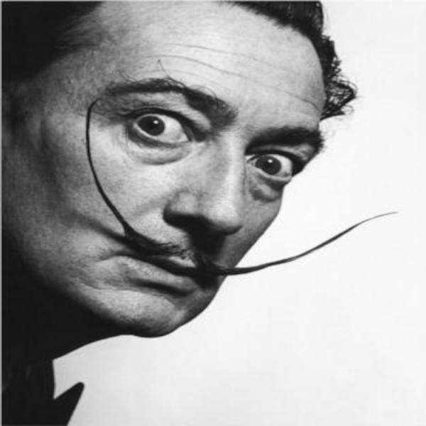

A arte moderna abrange um período extenso de inovação e mudança nas artes visuais, e diversos artistas tiveram um papel importante nesse movimento. A seguir, apresento uma lista de alguns dos artistas mais influentes para a arte moderna, embora essa seja uma seleção subjetiva e outros nomes também possam ser considerados relevantes:
Pablo Picasso (1881-1973)
Um dos artistas mais influentes do século XX, Picasso foi um dos pioneiros do cubismo e teve um impacto profundo na arte moderna com suas diversas fases artísticas.

Henri Matisse (1869-1954)
Reconhecido por seu uso audacioso da cor e suas obras de arte fauvistas, Matisse é considerado uma figura-chave na arte moderna.
Vincent van Gogh (1853-1890)
Embora tenha vivido e trabalhado no final do século XIX, Van Gogh é frequentemente associado ao início da arte moderna devido à sua abordagem única de cores e pinceladas.
Paul Cézanne (1839-1906)
Ele foi um dos precursores do cubismo e teve um papel significativo na transição da arte do século XIX para o século XX.
Wassily Kandinsky (1866-1944)
Conhecido como o pai da arte abstrata, Kandinsky explorou a não-representação artística e a importância das cores e formas.
Marcel Duchamp (1887-1968)
Uma figura revolucionária na arte moderna, Duchamp desafiou as convenções ao introduzir objetos cotidianos como arte, inaugurando a era da arte conceitual.
Salvador Dalí (1904-1989)
Um dos principais representantes do surrealismo, Dalí criou imagens icônicas e obras de arte oníricas.
Georgia O'Keeffe (1887-1986)
Conhecida por suas pinturas de flores e paisagens, O'Keeffe foi uma das principais artistas americanas da arte moderna.
Joan Miró (1893-1983)
Um dos principais artistas surrealistas, Miró criou obras com formas biomórficas e cores vibrantes.
Andy Warhol (1928-1987)
Figura central do movimento de pop art, Warhol explorou a cultura de massa e a iconografia do século XX.
Jackson Pollock (1912-1956)
Um dos expoentes do expressionismo abstrato, Pollock tornou-se famoso por suas pinturas gestuais e espontâneas.
Mark Rothko (1903-1970)
Um dos principais artistas do expressionismo abstrato, Rothko é conhecido por suas pinturas de campos de cores suaves e planas.
Esses artistas, entre outros, tiveram um papel crucial no desenvolvimento e na evolução da arte moderna, influenciando gerações futuras de artistas e moldando o cenário artístico do século XX e além. Suas contribuições abriram novas possibilidades de expressão artística e desafiaram as convenções estabelecidas, contribuindo para a diversidade e a riqueza da arte contemporânea.